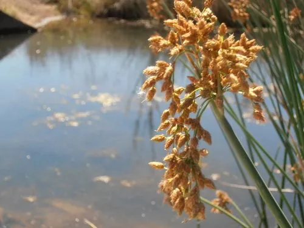

水生植物 · 植物界
水葱 Schoenoplectus tabernaemontani

莎草科水葱属多年生挺水草本，茎圆柱形、光滑似葱，高可达 2 米，常生于池塘沼泽，是常见的水景与编织植物。
- 分类
- 门被子植物门纲单子叶植物纲目禾本目科莎草科属水葱属
- 栖息环境
- 池塘、湖泊、沼泽与河岸的浅水区
- 地理分布
- 北半球温带地区，中国南北各地常见
- 保护级别
- 暂无评估
物种志
水葱为莎草科水葱属的多年生挺水草本，具粗壮根状茎，秆圆柱形，高 1–2 米，直径 0.5–1 厘米，表面光滑、灰绿色，内部有海绵状通气组织。叶片退化为叶鞘，包裹在秆的基部。花序为聚伞花序，顶生，小穗多数，花小、淡黄褐色，花期 6–8 月；果实为小坚果。
水葱广泛分布于北半球温带的池塘、湖泊、沼泽和河岸，喜阳光充足、温暖湿润的浅水环境，适宜水深 10–40 厘米，耐寒、耐瘠薄。它茎秆圆柱形、光滑似葱，成片生长时姿态挺拔，是水景绿化的常见植物；茎秆柔韧，过去也用于编织席、篮。栽培以分株和根状茎繁殖为主，生长期间保持浅水，冬季剪除枯秆。
形态与习性
- 株高1–2 米，秆直径 0.5–1 厘米
- 茎圆柱形，光滑，内有通气组织
- 花期6–8 月，小穗淡黄褐色
- 水深适宜水深 10–40 厘米
- 光照喜充足阳光
- 土壤富含腐殖质的湿地泥
- 繁殖分株、根状茎繁殖
- 主要用途水景绿化、茎秆编织
趣味知识
- 水葱的茎圆柱形、光滑，像一根根大葱，因此得名。
- 它的茎内有海绵状通气组织，能把空气输送到水下的根。
- 水葱茎秆柔韧，过去常用来编织席子和篮子。